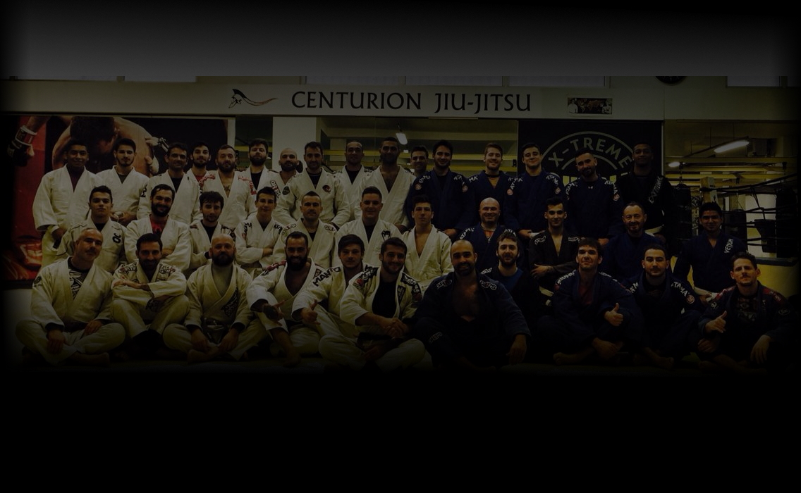
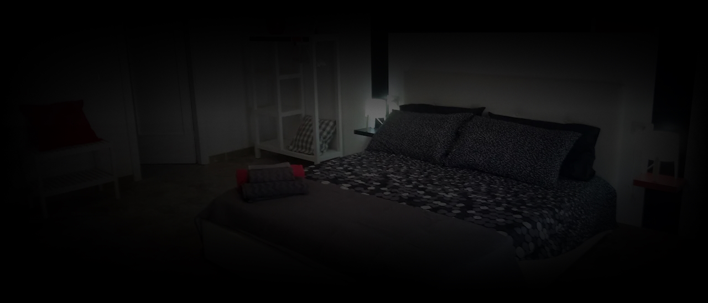

HEAD COACH
MARIO PUCCIONI
Cresciuto in una famiglia di karateka, muovo i miei primi passi nel mondo delle AM a 18 anni,
col Tae Kwon Do WTF. Conseguo la cintura nera in
Corea.
Contestualmente al TKD seguii parallelamente lo studio del Wing Tsun,
del quale divenni istruttore e che continuerò a praticare a fasi alterne fino al programma di
1° grado tecnico(EBMAS).
All’asse portante del WT-Escrima filippino aggiunsi esperienze sporadiche in molti sistemi.
In seguito alla profonda disaffezione per le arti
tradizionali, mi dedicai allo studio della Thai Boxe con il DT
nazionale dell’epoca (FENASCO) fino al grado di istruttore; mi dedicai allora
all’insegnamento delle discipline da ring per diversi anni, con allievi che raggiunsero discreti
risultati agonistici.
Studiai la Boxe, ottenendo il diploma Istruttore FPI
nell’ottica di migliorare la tecnica pugilistica.
In parallelo agli SdC studiai intensamente discipline energetiche e
salutari cinesi, raggiungendo il livello di istruttore di Yi Quan sotto due
differenti scuole internazionali.
Nel 2003 mi avvicinai al Brazilian Jiu-Jitsu. Fortemente impressionato dalla
versatilità ed efficacia dell’arte, decisi istantaneamente di dedicare anima e corpo, sino al
punto di partire armi e bagagli per Roma, dove restai a lungo per allenarmi full-time.
Sono il fondatore di Team Centurion, una delle prime scuole di BJJ a Firenze e in Toscana.
Ho conseguito la "faixa preta" (cintura nera) nel
marzo 2014 da Octavio
"Ratinho" Couto Jr. Partecipai a diverse gare di BJJ e Submission come atleta (Campionato
Europeo 2006, UK Open 2005) e come
insegnante, con risultati soddisfacenti per i suoi allievi, sempre medagliati in tutte le
edizioni.

IL TEAM
L'A.S.D. Centurion è una delle più antiche scuole di Brazilian Jiu Jitsu in Toscana. Nato a Firenze,
il nostro team ha l'obiettivo di offrire un insegnamento professionale, così da aiutare i nostri
affiliati a raggiungere gli obiettivi che si sono posti nel migliore modo possibile.
La definizione che diamo del Jiu Jitsu e della nostra pratica è la seguente:
- Una disciplina divertente, tramite la quale socializzare in un ambiente
sano e amichevole;
- Un metodo di cultura del corpo, con il quale ottenere una perfetta forma
fisica senza noia;
- Uno sport agonistico accessibile a tutti, dove si gareggia a contatto
pieno ma senza colpi in faccia;
- Un metodo che insegna delle nozioni utili nella difesa personale;
- Una base imprescindibile per le MMA;
- Un'Arte a tutto tondo, intesa a sviluppare la persona umana in tutte le
sue parti costitutive: cervello, carattere, fisico e Spirito;
- Una Via per la ricerca di sé e per l'ampliamento della propria
coscienza.
E' convinzione radicata dei nostri istruttori che una corretta pratica in quest'arte possa
migliorare la qualità della vita da tutti i punti di vista.
il Jiu Jitsu è adatto a tutti e divertente da praticare, perché ogni allenamento è basato su
sparring cioè lotta vera e propria, con avversari non collaborativi. Si lotta sempre, in tutte le
classi, e in questo modo si applicano con massimo realismo le tecniche. Non esistono kata e colpi
"mortali".
L'evidenza storica e la logica illustrano che il combattimento a terra vede prevalere
facilmente un lottatore addestrato con questa metodologia su un avversario magari molto robusto ma
non preparato.
Al Centurion crediamo che gareggiare sia indispensabile, ma pratichiamo e sviluppiamo quella
versione del BJJ detta "old school", cioè precedente alla sportivizzazione pura: si gareggia per
migliorare il proprio Jiu Jitsu e NON si pratica al solo scopo di gareggiare. E' nostra opinione che
una forsennata specializzazione nel solo curriculum tecnico da torneo porti alla perdita
dell'utilità del sistema nello scontro reale e anche a un deterioramento della concezione stessa
della disciplina, la quale scade da arte -metodo per il miglioramento della persona - a sport
ricreativo.

PREPARAZIONE FISICA
All'asse portante del Jiu Jitsu brasiliano, al
Centurion è affiancata la
moderna preparazione atletica. Ai fini di salute e prestazione sono impiegati i più efficaci metodi
scientifici di sviluppo delle capacità condizionali, a cominciare dalla forza submassimale tramite
sollevamento pesi. In particolare l'aumento della forza viene reputato importante ai fini della
prevenzione degli infortuni muscolari e sopratutto articolari.

ALIMENTAZIONE
Nessuno può essere sano e in forma se si alimenta in maniera scorretta. Alla base di ogni prestazione
c'è la giusta alimentazione, che al Centurion viene tenuta nella massima considerazione. In particolare
si dà molto spazio al concetto di nutrizione, ossia all'insieme costituito da alimentazione più
idratazione più integrazione. Senza rilasciare diete, ci si limita a suggerire cibi sani e idonei al
fine del dimagrimento, dell'aumento della massa magra e in generale della massima omeostasi, puntando
molto anche sul timing dei pasti e della scelta degli accoppiamenti tra alimenti.
Palestra Doyukai, Via Francesco Talenti, 108, 50142 Firenze FI

ALLOGGIO
Il professor Mario Puccioni è il titolare del bed&breakfast Edotto, sito a poche centinaia di metri
dall'accademia. Si tratta di una struttura da poco restaurata e dotata di tutti i comfort, posta in una
via privata, silenziosa e tranquilla, e nella quale una delle stanze è tutta dedicata al tema del
Brazilian Jiu Jitsu.
Sono disponibili pacchetti alloggio+allenamento.